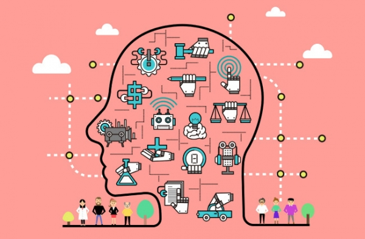

AI 시대, 직업의 지각변동 분석
인공지능은 단순히 반복적인 업무를 대체하는 것을 넘어, 산업 전반의 가치 사슬을 재편하고 있습니다. 우리는 이 변화를 위협이 아닌 기회로 인식하고, AI가 대체할 수 없는 창의적이고 감성적인 영역에 집중해야 합니다.
주의: AI는 자동화의 속도를 높일 뿐, 인간의 '공감'과 '창의성'은 대체할 수 없는 핵심 영역입니다.
1. AI가 대체할 가능성이 높은 직무
데이터 입력, 단순 고객 서비스 응대, 반복적인 보고서 작성, 기초적인 코딩 등 규칙 기반의 정형화된 업무는 AI와 로봇이 가장 빠르게 대체할 분야입니다. 이러한 직무에 종사하는 인력은 새로운 기술을 학습하여 AI를 '도구'로 활용하는 역할로 전환해야 생존할 수 있습니다. 예를 들어, 단순 데이터 분석은 AI에게 맡기고, 분석된 결과를 바탕으로 전략적인 의사 결정을 내리는 역할이 중요해집니다.
2. AI 시대에 새롭게 떠오르는 직업군
AI 모델을 설계하고, 데이터를 관리하며, AI의 결과를 해석하고 윤리적으로 통제하는 직업들이 각광받습니다. 특히, 프롬프트 엔지니어처럼 AI와 소통하는 방법을 전문적으로 연구하거나, AI 윤리 및 규제 전문가처럼 사회적 합의를 이끌어내는 역할은 인간만이 할 수 있는 영역입니다. 또한, 심리학자, 예술가 등 인간의 감성과 상호작용이 필수적인 직업의 가치는 더욱 상승할 것입니다.
